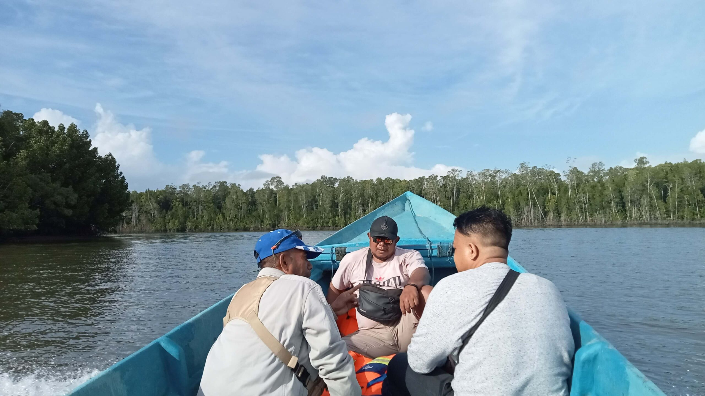
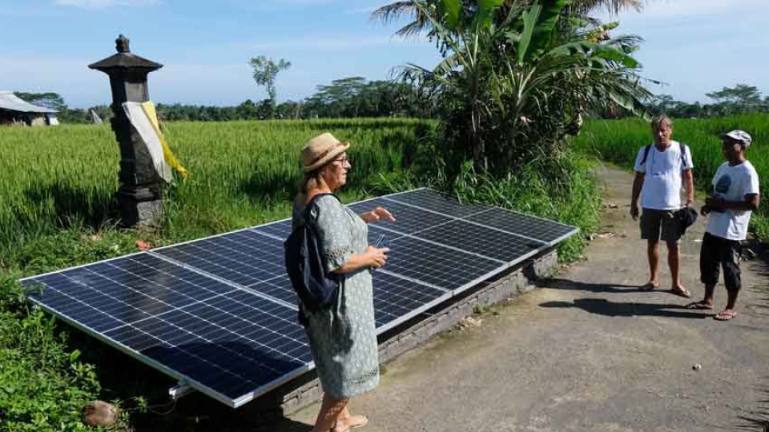

Dampak SDGs untuk umum
Tujuan SDG 7, yang berfokus pada akses energi bersih, modern, dan terjangkau, memberikan manfaat besar secara global. Energi yang andal dan terjangkau dapat mendukung pembangunan ekonomi, meningkatkan kualitas hidup, dan mengurangi ketimpangan. Selain itu, transisi menuju energi terbarukan berkontribusi signifikan dalam mengurangi emisi gas rumah kaca, sehingga membantu mitigasi perubahan iklim. Peningkatan penggunaan energi bersih juga mendorong inovasi teknologi dan menciptakan lapangan kerja baru di sektor energi terbarukan.
Dampak SDGs untuk Indonesia
Bagi Indonesia, SDG 7 memberikan dorongan untuk mengurangi ketergantungan pada bahan bakar fosil dan mempercepat transisi energi. Pengembangan energi terbarukan, seperti tenaga surya dan panas bumi, tidak hanya memperkuat ketahanan energi nasional tetapi juga membuka peluang investasi di sektor energi bersih. Selain itu, proyek seperti Indonesia Terang membantu memperluas akses listrik di daerah terpencil, mendukung pemerataan pembangunan, dan meningkatkan produktivitas ekonomi. Komitmen terhadap energi bersih juga membantu Indonesia memenuhi target pengurangan emisi karbon dalam kerangka Perjanjian Paris.
Dampak SDGs untuk masyarakat Indonesia
Bagi masyarakat, pencapaian SDG 7 berarti akses yang lebih luas terhadap energi listrik yang terjangkau dan berkelanjutan. Di daerah pedesaan, listrik memungkinkan masyarakat untuk mengakses layanan pendidikan, kesehatan, dan ekonomi yang lebih baik. Energi bersih juga membantu mengurangi polusi udara dari penggunaan bahan bakar tradisional, seperti kayu bakar, yang berdampak pada kesehatan. Selain itu, masyarakat dapat menikmati peluang kerja baru dari pengembangan sektor energi terbarukan, sehingga mendukung peningkatan kesejahteraan dan kualitas hidup.
 